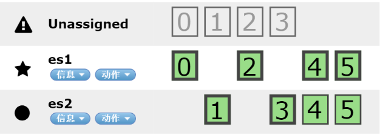
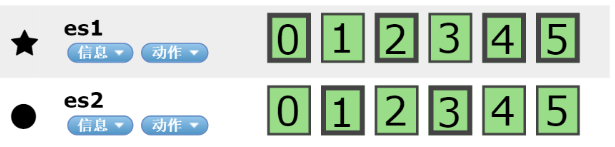
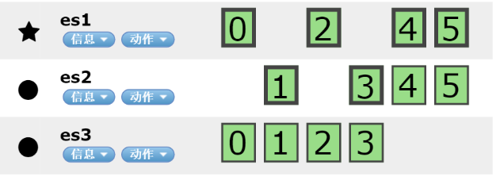

Elasticsearch V2.3.4 集群部署记录：3个Node，6个Shard，2个Replica，能保证一台服务器宕机服务还能正常运行，且后期容易扩展到6个Node；
安装Java
sudo yum install java-1.8.0-openjdk.x86_64
Centos7自带openJdk8
swap配置
swapping_is_the_death_of_performance,
ElasticSearch建议将 /proc/sys/vm/swappiness 设置为 0。默认设置为30。
查看当前swap分区设置cat /proc/sys/vm/swappiness
临时修改值：sudo sysctl vm.swappiness=0 / sudo swapoff -a
永久修改值：vim /etc/sysctl.conf，在最后加一行vm.swappiness = 0
修改hostname
设置hostname为v3es1，并查看修改结果1
2
3
4es1
hostnamectl set-hostname es1
hostnamectl set-hostname es1 --static
hostnamectl status
1 | es2 |
1 | es3 |
vim /etc/hosts1
2
3
4 es节点配置
193.168.201.213 es1.es.com es1
193.168.201.85 es2.es.com es2
193.168.201.117 es3.es.com es3
局域网hosts配置
1 | 局域网hosts配置es |
关闭防火墙
1 | 停止firewall |
新增用户
1 | mkdir -p /data/elasticsearch/{data,work,plugins,scripts} |
安装elasticsearch
how-to-install-and-configure-elasticsearch-on-centos-7
下载rpm包
cd /mntwget https://download.elastic.co/elasticsearch/release/org/elasticsearch/distribution/rpm/elasticsearch/2.3.4/elasticsearch-2.3.4.rpm
yum本地安装
cd /mnt && sudo yum localinstall elasticsearch-2.3.4.rpm
设置自启动
sudo systemctl daemon-reloadsudo systemctl enable elasticsearch.service
修改配置文件
vim /etc/elasticsearch/elasticsearch.yml
1 | cluster.name: cloudx_web |
复制到集群：scp /etc/elasticsearch/elasticsearch.yml root@es1:/etc/elasticsearch/
理想状态下，3个Node，6个Shard，2个Replica，能保证一台服务器宕机服务还能正常运行，且后期容易扩展到6个Node；
但如果存储成本高，可改为1个Replica
另配置discovery.zen.minimum_master_nodes=2可保证不会出现脑裂问题；
3个节点正常运行
节点3挂了

replica自动复制迁移

节点3恢复正常

配置elasticsearch heap大小
vim /etc/sysconfig/elasticsearch1
2ES_HEAP_SIZE=3G
MAX_OPEN_FILES=65535
启动服务
su elasticsearchsudo systemctl start elasticsearch.service
查看运行状态
service elasticsearch status
1 | ● elasticsearch.service - Elasticsearch |
测试是否成功
curl -X GET ‘http://localhost:9200‘
curl -X GET ‘http://193.168.201.250:9200‘
curl -X GET ‘http://193.168.201.252:9200‘
curl -X GET ‘http://193.168.201.117:9200‘
插入测试
curl -X POST ‘http://es1:9200/tutorial/helloworld/1‘ -d ‘{ “message”: “Hello World!” }’
curl -X GET ‘http://es1:9200/tutorial/helloworld/1?pretty‘
查看日志
tail -f 200 /var/log/elasticsearch/cloudx_web.log
安装信息
- 安装目录：
/usr/share/elasticsearch/ - 配置目录：
/etc/elasticsearch - 启动初始化脚本：
/etc/init.d/elasticsearch - 日志目录：
/var/log/elasticsearch - 配置参数(https://www.elastic.co/guide/en/elasticsearch/reference/current/setup-service.html)
删除elasticsearch
yum remove elasticsearchfind / -name "elasticsearch" -exec rm -rf {} \;
ElasticSearch插件
Elastic-HQ
Monitoring, Management, and Querying Web Interface for ElasticSearch instances and clusters.
Benefits:
- Active real-time monitoring of ElasticSearch clusters and nodes.
- Manage Indices, Mappings, Shards, Aliases, and Nodes.
- Query UI for searching one or multiple Indices.
- REST UI, eliminates the need for cURL and cumbersome JSON formats.
- No software to install/download. 100% web browser-based.
- Optimized to work on mobile phones, tablets, and other small screen devices.
- Easy to use and attractive user interface.
- Free (as in Beer)
- 安装：
cd /usr/share/elasticsearch/bin && ./plugin install royrusso/elasticsearch-HQ - 地址：http://es1.es.com9200/_plugin/hq/
ElasticSearch-Kopf
Kopf是一个ElasticSearch的管理工具，它也提供了对ES集群操作的API。
- 安装：
cd /usr/share/elasticsearch/bin && ./plugin install lmenezes/elasticsearch-kopf - 地址：http://es1.es.com:9200/_plugin/kopf/
Elasticsearch-head
A web front end for an Elasticsearch cluster，查看集群状态
- 安装：
cd /usr/share/elasticsearch/bin && ./plugin install mobz/elasticsearch-head
ElasticSearch-Paramedic
Paramedic is a simple yet sexy tool to monitor and inspect ElasticSearch clusters.
It displays real-time statistics and information about your nodes and indices, as well as shard allocation within the cluster.
The application is written in JavaScript, using the Ember.js framework for sanity and the Cubism.js library for visuals. While the project is useful, the codebase, with most logic in controllers, lacking proper component separation and test suite, can’t be considered mature enough, yet.
- 安装：cd /usr/share/elasticsearch/bin && ./plugin install karmi/elasticsearch-paramedic/
- 地址：http://es1.es.com:9200/_plugin/paramedic
ElasticSearch-Whatson
Whatson is an elasticsearch plugin to visualize the state of a cluster. It’s inpired by other excellent plugins:
xyu/elasticsearch-whatson
- 安装：
cd /usr/share/elasticsearch/bin && ./plugin install xyu/elasticsearch-whatson - 地址：http://es1.es.com:9200/_plugin/whatson
安装问题
服务启动问题-Failed to created node environment
启动权限问题，必须以elasticsearch用户启动服务，不能以root启动
配置问题-discovery.zen.ping.unicast.hosts
Likely root cause: java.net.UnknownHostException: v3es1: unknown error
hostname -f查看fqdn
ElasticHQ安装问题
关闭防火墙，设置好fqdn，关闭VPN
discovery.zen.ping.unicast.hosts中的hostname ping不通
日志
1 | discovery.zen.ping.unicast] [es1] failed to send ping to [{#zen_unicast_3#}{193.168.201.117}{es3/193.168.201.117:9300}] |
解决：hostname忘记设置了，(╯□╰)